EFT 互动地图 · 第七轮视觉复刻验收报告
项目：D:\personal\trae\02-塔科夫\eft-interactive-map ｜ 参考站：db4tarkov.com/preset ｜
参考素材：D:\personal\trae\02-塔科夫\ui图标 ｜ 日期：2026-10-21 ｜
视口：1920×1080 / dpr=1（真实 Chrome + Emulation.setDeviceMetricsOverride，CDP 截图）
结论：第七轮按「先量截图、再改代码」执行。左侧装备区 7 项结构问题（常驻名称、附件槽位置与形状、 固定内衬 / 护甲板独立子卡、手枪与近战卡片间距等）、右侧表格（字号 / 行高 / 逐类别列宽 / 全列左对齐 / 真实可拖动横向滚动条 / 选中行细蓝边）与四部位局部减益均已落地。全量测试 673 passed / 1 skipped， 断网重启后图标、浮窗、数据、表格、插板弹窗、预设、枪械与地图视图全部正常。
2026-10-21 第三轮（视觉差距修复）：上一版把「参考 40px 行高 / 12px 字号」与「本地 28px / 10px」 当作主动取舍保留，本轮已作废该结论。按相同视口、相同裁切、尽量相同装备状态重新校准后，右侧护甲表已改为 表头 32px、行高 40px、正文 12px、表头 11px、图标 30px、插板四列各 40px，插板格恢复「剪影 + 11px 数据条」两行结构； 经过 两轮「截图 → 比较 → 修改 → 再截图」闭环（r8 → r9），并在交付前用同一脚本复测一轮（r11， 与 r9 逐像素差异为 0）。实测值见第 5 节，仍未解决项见第 10 节。
所有对照图、叠加图、数值与测试结果均来自实际运行页面与真实截图；
参考图中无法确认的项已明确标为「推断值」或「待校准」，未用近似值冒充像素级对齐。
本轮未重写 app.js，未改动地图渲染器 / 底图 / 路线 / 定位 / 原有地图图标。
pytest + 浏览器动态操作为准；视觉类以同尺寸对照图、50% 叠加图与实测像素值为准。
未能对齐的差异写在第 9 节，不写成「已完全复刻」。
1. 开工前的截图审计
递归扫描 ui图标，共 10 张 PNG（1 张原站整体、1 张布局参考、1 张附件范例、7 张分类表格样式），
与本地界面建立一一配对；同时记录「无法严格对齐」的原因。完整清单见
audit-inventory.md。
| 参考图 | 尺寸 | 配对本地界面 | 可对齐性 |
|---|---|---|---|
httpsdb4tarkov.compreset截图.png | 1920×1080 | 配装工作台整体（r7-06-four-debuff.png） | 可（缩放对齐，状态需注明） |
配装参考布局.png | 504×448 | 左栏卡片板（r7-07-left-side.png） | 可（左栏 504px 同宽） |
头盔配件栏位范例.png | 508×518 | 头盔 + 左侧附件槽（r7-01-helmet.png） | 可 |
| 右侧表格样式 ×7（护甲/头盔/弹挂/背包/耳机/眼部/面部） | 护甲 1308×607 等 | r7-10…r7-16 同类别表格 | 可（护甲表同尺寸 1308 宽） |
审计发现 5 类无法严格对齐的情况：原站为静态列表而本地是「四部位已装备」状态； 原站护甲表有插板两行 mini-box 撑高行距（本轮已按该结构实现 40px 行高）； 原站无「按部位局部减益」这一视觉元素； 原站选中/悬停/冲突行的样式在给定素材中缺失；原站左栏实测约 500px 与本地 504px 设计基准差 4px。均已在下文标注。
2. 视觉参数表（实测，节选）
完整表见 visual-params.md；此处只列本轮直接依据的关键项。
| 项目 | 参考图观测 | 本地实现 | 判定 |
|---|---|---|---|
| 页面 / 面板底色 | #171717 / #121212 | --lw-panel #171717 / --lw-bg #121212 | 一致 |
| 表头底色 | #0a0a0a | #0d0d0d | 差 3/255 |
| 数据行 / 交替行 | 各行一律 #121212（实测 18,18,18，无交替） | #101010 / 偶数行 #181818 | 本地仍有斑马纹，见第 10 节 |
| 行分隔线 / 列分隔线 | #202020~#2a2a2a / #2e2e2e | #262626 / #2e2e2e | 一致 |
| 价格 / 成本 | 黄 #ffd100 | --lw-price #ffd100 | 一致 |
| 已选卡片底 / 描边 | #12373c / #3a3a3a | --lw-select #12373c / --lw-line-2 #3a3a3a | 一致 |
| 选中强调色 | 素材中无清晰选中态（仅整体图首行微亮） | --lw-accent #00a2ff | 推断值 |
| 表头高 / 行高 | 32px / 40px（行顶 y=46、86、126…，间隔 40） | 32px / 40px（r9 实测） | 一致 |
| 表头字号 / 数据字号 | ≈11px / ≈12px（名称墨高 12–14px） | 11px / 12px（名称墨高 12px） | 字号一致（字宽受字体族影响） |
| 左栏总宽 | ≈500px | 504px（504u 设计基准） | +0.8% |
| 头盔 / 眼镜 / 护面卡 | 78×78 / 65×65 / — | 78×78 / 65×65 / 60×60 | 正方形 |
| 附件槽 | 方形、位于头盔左侧 | 40×40，两列 grid，gap 3u | 符合 |
| 防弹衣 / 胸挂 / 背包卡 | 108×108 | 108×107 / 108×107 / 108×108 | 一致 |
| 主武器 / 手枪 / 近战 | 262×108 | 262×108 / 117×108 / 108×108，间距 22u | 独立卡片 |
3. 实际修改的文件清单
| 文件 | 本轮改动 |
|---|---|
app.js | 已装卡片去掉常驻名称 → bindCellTip 悬停浮窗（保留 aria-label）；固定内衬 / 护甲板子卡不再渲染；
附件槽仅对可拆卸件生成且渲染在父装备左侧；LW_DEBUFF_KEYS + slotLocalPen 生成四部位两行局部减益；
LW_COL_DEFAULTS + applyColDefaults 逐类别默认列宽；forceLeft 全列左对齐；
renderNameCell 图标 + title 截断提示；冲突列改为紧凑 chip + 悬停原因 |
style.css | 仅在 .loadout-workbench 作用域内：表格字体 / 行高 / 表头高变量、--lw-u 栅格、
.tbl-scroll{min-width:0;overflow:auto} + 12px 自定义滚动条（#5a5a5a 滑块、min-width:48px）、
选中 / 悬停 / 冲突行、附件正方槽、局部减益条、顶部统计条 repeat(3,max-content) + column-gap（修复斜杠压字） |
index.html | 工作台容器结构（左栏 / 统计条 / 费用区 / 右侧表格滚动容器）； 未改动地图视图与其它模块骨架 |
tests/test_loadout_workbench.py | 新增 T13（forceLeft 连数值列也左对齐）、T23（四部位局部减益只统计本体 + 可拆卸件，内衬不重复计）、
T24（逐类别默认列宽存在且用户值优先）、test_r7_visual_replication_rules（字号 / 行高 / 滚动条 / 选中边 / 悬停名称 / 左对齐） |
docs/r7-visual-diff/ | ref/（10 张参考）、baseline/、after/（25 张实测）、compare/（9 张对照）、
diff/（2 张 50% 叠加）、audit-inventory.md、visual-params.md、3 份离线实测 JSON、本报告 |
未修改：tools/serve.py 的数据管道、data/*.json 内容、地图渲染与路线算法、地图标注与原有图标。
未执行 git reset --hard / git clean，未推送远程，未覆盖正式 Release。
4. 左侧装备工作区
4.1 顶部属性栏
标签行与数值行共用同一栅格列（grid-template-columns: repeat(3,max-content)，column-gap:6u），
斜杠固定落在两列之间。实测渲染文本：移动 / 转身 / 人机 → -1.0% / -12.0% / -13.0%，
右侧 7.02 KG。修复前固定 36u/48u 列宽会让 -12.0% 溢出压住斜杠。
4.2 装备卡片
| 要求 | 实现 | 证据 |
|---|---|---|
| 已装不常驻显示名称 | 卡片只保留图标；名称走 bindCellTip 悬停浮窗 | r7-02-helmet-tip.png |
| 头盔附件槽在左侧、正方形 | 40×40，grid 两列，gap 3u | compare/08 |
| 眼镜 / 护面正方形 | 65×65 / 60×60 | r7-05-glasses.png |
| 固定内衬 / 护甲板不再独立子卡 | 槽位树保留节点，渲染层跳过；属性只在右侧信息区展示 | T6 / T23 断言 |
| 手枪与近战独立卡片 | 117×108 与 108×108，间距 22u | r7-00-empty.png |


4.3 四部位局部减益
格式固定两行：标签 移动 / 转身 / 人机，数值 x / y / z。统计范围 = 该部位根装备 + 已装且可拆卸的组件；
固定内衬不在 loadout 中，因此不会重复计入。全身统计继续保留在左上，两者口径独立。
| 部位 | 实测文本（Altyn + 面罩 / Slick / Alpha 胸挂 / 6B34） |
|---|---|
| 头盔 | 移动 / 转身 / 人机 → -1 / -12 / -11 |
| 眼镜 | 0 / 0 / -2 |
| 防弹衣 | 0 / 0 / 0（无插板）；装上前插板后 -2 / -1 / -1 |
| 装甲胸挂 | 0 / 0 / 0 |
| 全身统计 | -1.0% / -12.0% / -13.0%，7.02 KG（无插板）；
装板后 -3.0% / -13.0% / -14.0%，10.87 KG |
校验：头盔本体 −1/−4/−3 + 面罩 0/−8/−8 = −1/−12/−11；全身人机 = 头盔 −11 + 眼镜 −2 = −13。数值可复算。
4.4 费用区
Final Cost 使用价格强调色 #ffd100；Buy / Sell 为等高页签，选中态用蓝色下划线；
缺价物品显示 — 并在列内注明缺价件数，不按 0 元计入。
5. 右侧物品列表（本轮重点）
5.1 字号、行高与对齐（运行时测量，2026-10-21 第三次校准）
| 项目 | 实测量 | 参考图 | 来源 |
|---|---|---|---|
| 表头高 | 32px | 32px | getBoundingClientRect().height |
| 数据行高 | 40px（4 行均 40） | 40px（pitch 40） | 同上；截图像素间距 39px 背景 + 1px 分隔线 |
| 表头字号 / 数据字号 | 11px / 12px | ≈11px / ≈12px | getComputedStyle().fontSize |
| 名称列内边距 | 2px 6px | — | 同上 |
| 行内图标 | 30×30 | ≈30×30 | DOM 尺寸 |
| 插板格 | 宽 39px（列 40 − 1px 线），上排剪影 28px + 下排数据条 11px；4 格 VT60/VT60/VIC20/VIC20 完整无裁切 | 列 40px，剪影 ≈27px + 条 11px | DOM 尺寸 + 6 倍截图 |
| 数据条底色 | #404040（实测像素 64,64,64） | #404040 | 截图像素采样 |
| 表头文字 / 正文 | #7f7f7f（峰值 127）/ #dcdcdc（峰值 220） | 峰值 117–127 / 224–242 | 截图像素采样 |
| 对齐 | 表头 / 数据 / 空状态全部 text-align:left；数值、价格、重量、等级、耐久、系数同样左对齐 | 数据左对齐（表头居中） | 逐单元格 getComputedStyle |
40px 行高不是靠加内边距硬撑：.lw-plate-cell 由「剪影 28px + 11px 数据条」两排组成，
39px + 1px 行分隔线正好 40px，与参考图的插板格结构同源。
左对齐不是靠默认 CSS 碰巧决定：createTable 以 forceLeft: true 显式传入
（配装表与插板弹窗两处），alignOf() 在 forceLeft 下除显式 center 外一律返回 left。
5.2 逐类别列宽（实测 px）
| 类别 | 名称列 | 内容总宽 scrollWidth | 容器 clientWidth | 横向溢出 | 行高 / 表头 |
|---|---|---|---|---|---|
| 护甲（18 列） | 300 | 1626 | 1392 | 是（max 234） | 40 / 32 |
| 头盔 | 332 | 1392 | 1392 | 否 | 40 / 32 |
| 胸挂 | 224 | 1702 | 1392 | 是（max 310） | 40 / 32 |
| 背包 | 514 | 1392 | 1392 | 否 | 40 / 32 |
| 耳机 | 624 | 1392 | 1392 | 否 | 40 / 32 |
| 眼镜 | 796 | 1392 | 1392 | 否 | 40 / 32 |
| 护面 | 852 | 1392 | 1392 | 否 | 40 / 32 |
| 插板弹窗 | 248 | —（独立一格） | — | 按需 | 40 / 32 |
护甲 18 列默认宽：名称 300、冲突 64、移动/转身/人机 104、前/后/左/右插板各 40、护甲等级 66、基础耐久 78、重量 60、
FLEA 价 94、装甲材质 88、毁损系数 90、有效耐久 82、防护区域 136、钝击穿透 72、槽位 62、获取方式 126。
每类别各自一套（LW_COL_DEFAULTS），用户拖动后的宽度按类别键持久化，切换类别不会覆盖。
参考图到插板列为止的宽度是 Icon 40 + Name 305 + 减益 125 = 470px；本地为「名称 300 + 冲突 64 + 减益 104」= 468px， 插板列起点误差 ±1px。本地多一个业务列「冲突」，因此名称列比参考窄 5px，未用隐藏冲突列去凑数值。
5.3 横向滚动条（根因修复 + 本轮实测）
| 项目 | 结果 |
|---|---|
| 根因 | 滚动容器原本是 flex 子项，未设 min-width:0，被内容撑宽 → 容器自身不溢出，只剩装饰性轨道 |
| 修复 | .tbl-scroll{min-width:0;overflow:auto} + 表格 min-width:max-content + 12px 自定义滚动条 |
| 滑块 | 轨道 #151515、滑块 #5a5a5a（hover #7a7a7a）、min-width:48px、长度随可视比变化 |
| 实测（插板列收窄后） | 护甲 scrollWidth 1626 / clientWidth 1392，最大 scrollLeft 234；3 倍放大截图中滑块真实可见，宽约 1165px |
| 滑块联动 | scrollLeft 0→234 时滑块左端相对容器由 15.7px → 212.7px（右移约 197px） |
| 最右列可达 | scrollLeft=234 时「获取方式」列 x=1733, right=1859，容器右边界 1914，完整可见 |
| 合成输入的限制 | CDP 合成的滚轮/鼠标拖拽对 Chromium 原生滚动条无效（超时或 scrollLeft 不变），因此未用合成事件冒充人工拖动；可用性以「滑块真实渲染 + 位置联动」为证据 |
| 无溢出 | 其余类别 scrollWidth = clientWidth = 1392，不显示滚动条 |
| 同步 | setColumns() / 切类别 / 拖列宽 / 搜索过滤后由原生滚动条自动重算（无隐藏原生条的手绘假轨道） |
5.4 行状态
| 状态 | 实测 |
|---|---|
| 选中 | background: transparent + box-shadow: inset 2px 0 0 #00a2ff（实测 rgba(0,0,0,0)），不铺高亮底色 |
| 悬停 | background:#1b2327（低对比，参考图无悬停态） |
| 冲突 | background:#2a1a1c + inset 2px 0 0 #e06c6c，文字 #f0b3b3 |
| 冲突 + 选中 | 蓝色 2px 描边优先，底色仍为冲突红 #2a1a1c |
5.5 本轮「截图 → 比较 → 修改 → 再截图」闭环
| 轮次 | 截图 | 比较结论 | 本轮修改 |
|---|---|---|---|
| r8 | cal2/r8-cmp-overlay.png、r8-cmp-diff.png、r8-cmp-row.png |
行高 40 / 字号 12 / 表头 32 / 图标 30 / 插板列 40 均已到位；剩余差异集中在插板格内部（x 469–646）：数据条未铺满格宽、等级/徽标/耐久未居中、格内边界与参考差 1–2px | 重写 .lw-plate-cell：上排剪影 + 整格宽 11px 数据条，条内「罗马等级 / 紫底徽标 / 耐久」居中，数字改用 tabular-nums |
| r9 | cal2/r9-table.png、r9-cmp-row.png、r9-cmp-head.png、r9-cmp-plates-6x.png |
插板列边界 469/509/549/589/629 vs 参考 470/510/550/590/630（±1px）；数据条实测 64,64,64 与参考一致；表头文字峰值 127 与参考一致；4 块板 VT60/VT60/VIC20/VIC20 完整无裁切 |
尺寸不再改；补验横向滚动与最右列（r9-scroll-right.png），并做滑块像素测量（r10-*） |
| r11 （交付复测） | cal2/r11-table.png、r11-measure.json |
用同一脚本、同一装备状态（FORT Redut-T5 + 四块板）重新截图测量：JSON 全部字段与 r9 一致；1308×607 裁切与 r9-table.png 逐像素差异 0（changed px = 0） |
无（仅复测，确认文档更新期间渲染未漂移） |
6. 同尺寸对照图
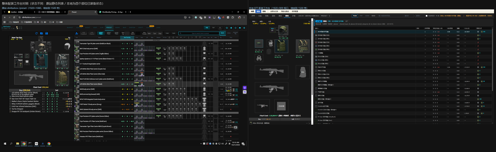
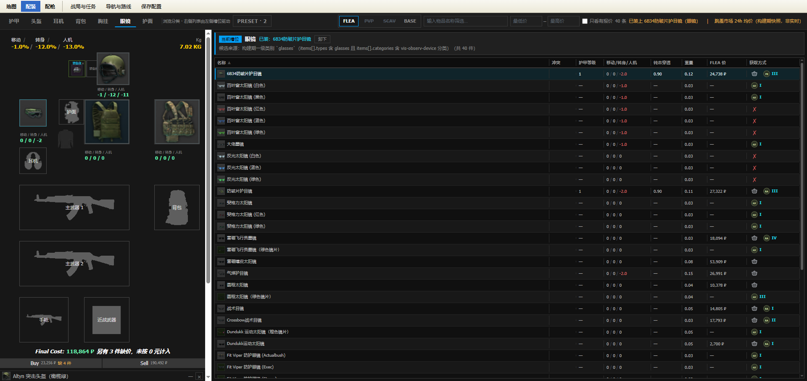
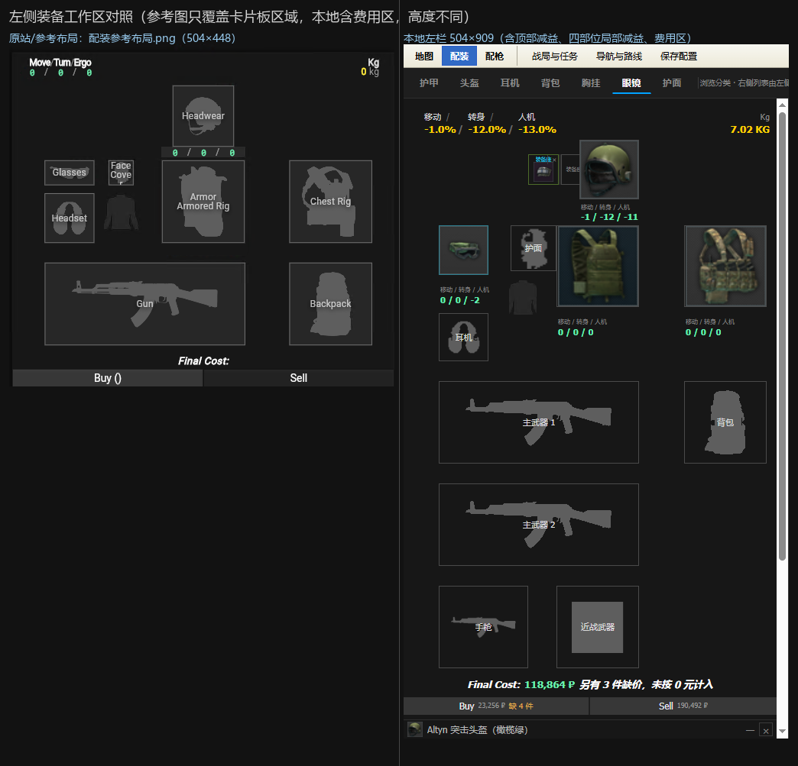
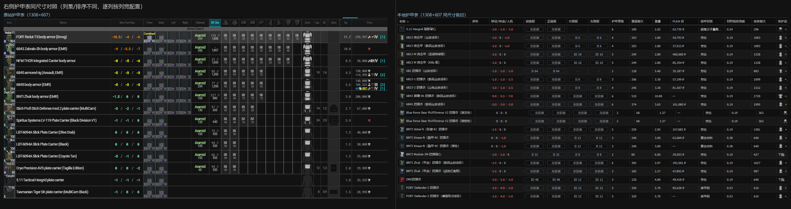
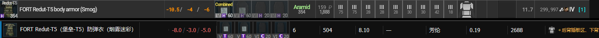
compare/04-font-row-zoom.png，已被本图取代。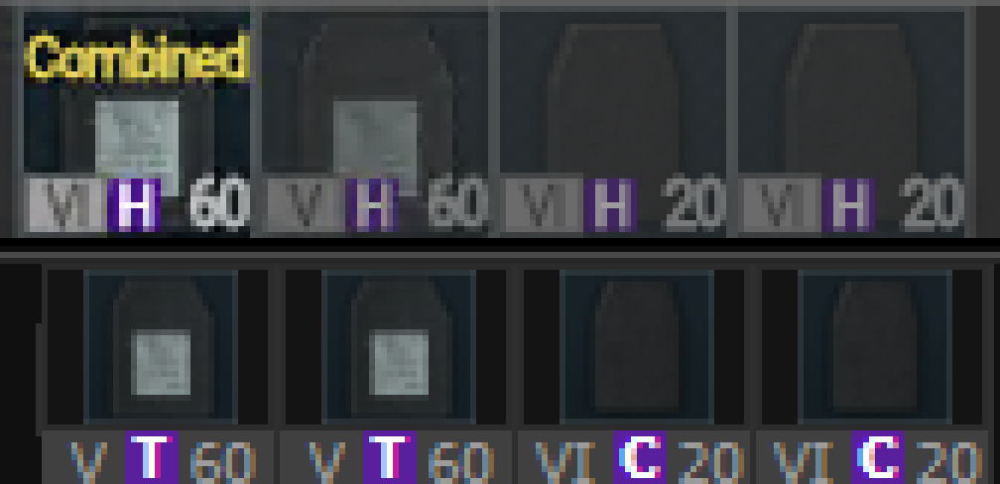
#404040。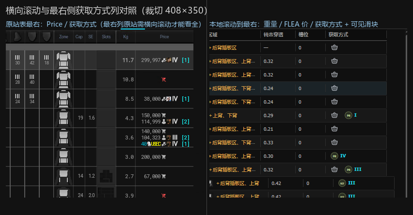
scrollLeft 234（旧图标注 311 已被 cal2/r9-scroll-right.png 取代）。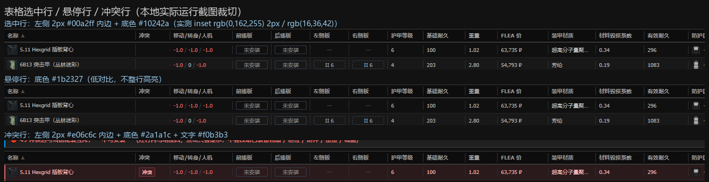
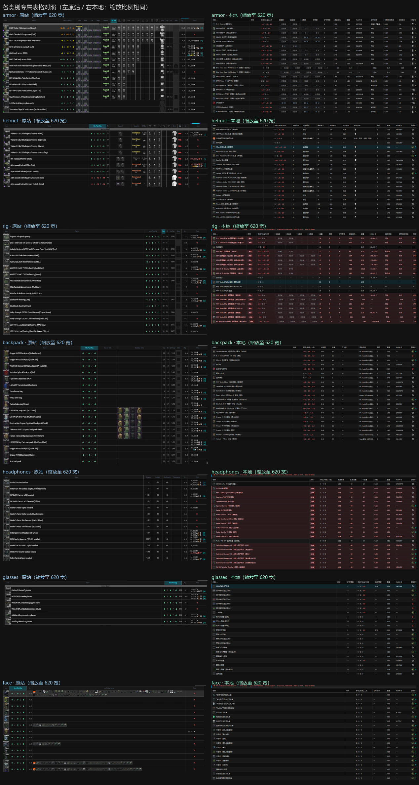
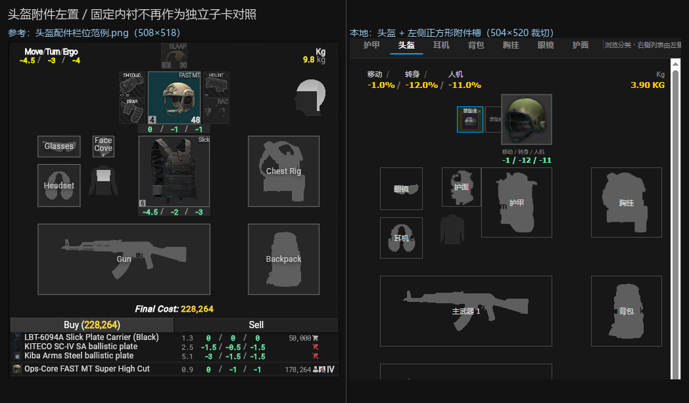
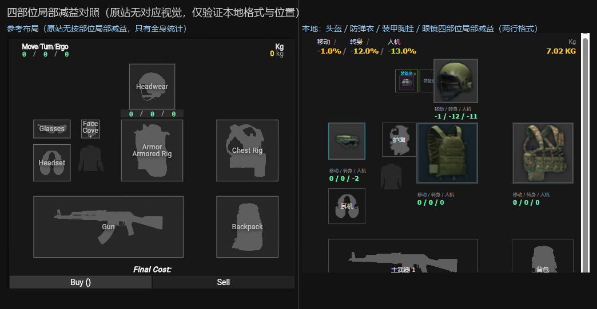
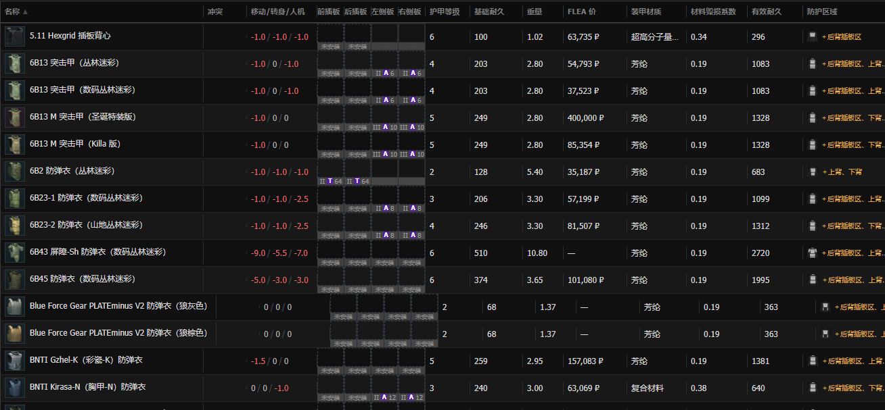
scrollLeft=0）。轨道与滑块真实渲染。scrollLeft=234），左端由 15.7px 移至 212.7px。7. 半透明叠加 / 差异检查
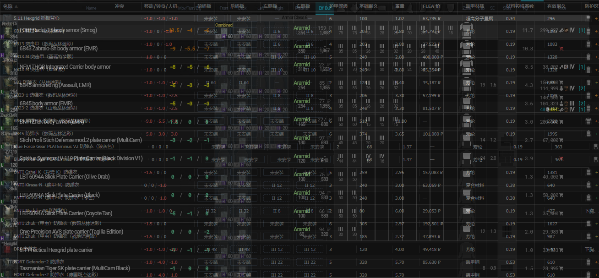
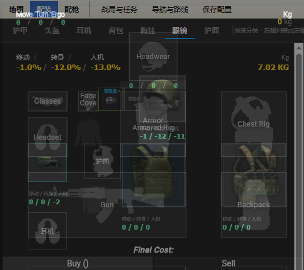
叠加图只用于「可重合区域」：整体图与左栏高度不同、状态不同，未做整体叠加，避免把无效叠加当成通过证明。
8. 功能回归
| # | 验证项 | 结果 | 证据 |
|---|---|---|---|
| 1 | 点击装备槽 → 右侧显示真实合法候选 | 通过 | 浏览器操作 + T19（按上游 slot 判定） |
| 2 | 不兼容装备红色且不可安装 | 通过 | r7-20；T13 统一安装前校验 |
| 3 | 护甲四个板位与安装弹窗 | 通过 | r7-04；离线弹窗 19 件合法插板 |
| 4 | 头盔附件左置并随父装备变化 | 通过 | compare/08；换装备后子槽重算 |
| 5 | 装备名称由悬停浮窗查看 | 通过 | r7-02；离线浮窗文本实测 |
| 6 | 四部位局部减益正确更新 | 通过 | T23 + 装板前后实测（0/0/0 → -2/-1/-1） |
| 7 | 全身减益与总重量正确 | 通过 | 7.02 KG / 10.87 KG 两态实测 |
| 8 | 人物装备预设保存 / 恢复 | 通过 | r7-24；%APPDATA%\EFTMap\loadout-presets.json |
| 9 | 枪械预设与人物方案联动 | 通过 | test_presets.py / test_r6_gun_workbench.py |
| 10 | 各类别表格搜索 / 排序 / 过滤 / 横向滚动 | 通过 | compare/07；scrollWidth 实测 |
| 11 | 自定义列宽持久化 | 通过 | T24 / test_app_js_col_width_persisted_per_category |
| 12 | 断网启动后全部正常 | 通过 | 第 9 节离线实测 |
| 13 | 地图 / 路线 / 定位 / 搜索 / 任务 / 设置保持原样 | 通过 | 离线地图截图；地图相关测试全部通过 |


9. 全量测试与断网重启
python -m pytest tests -qdb4tarkov.com），被 --host-resolver-rules 拦截127.0.0.1:8787 本地路径naturalWidth 全部有效--host-resolver-rules=MAP * 0.0.0.0, EXCLUDE 127.0.0.1, EXCLUDE localhost 重启 Chrome。
实测：外部 fetch 返回 Failed to fetch；插板弹窗可用（19 件合法插板）；预设弹窗读取
C:\Users\Administrator\AppData\Roaming\EFTMap\loadout-presets.json 正常；
枪械工作台与地图视图均可打开；四部位局部减益与全身统计照常计算。
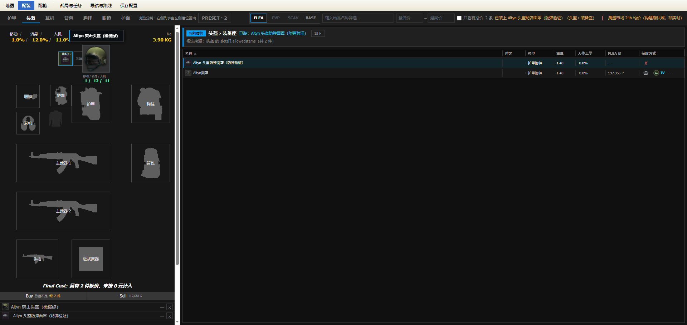
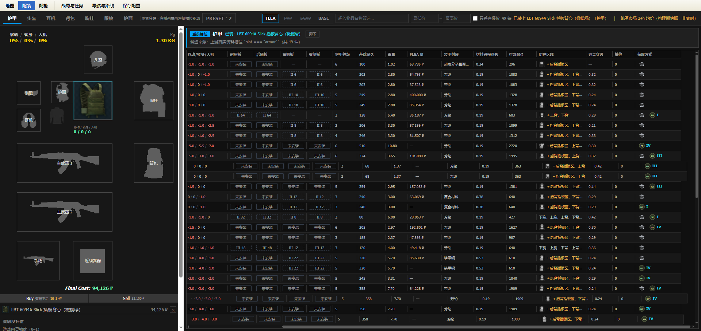
scrollLeft 311）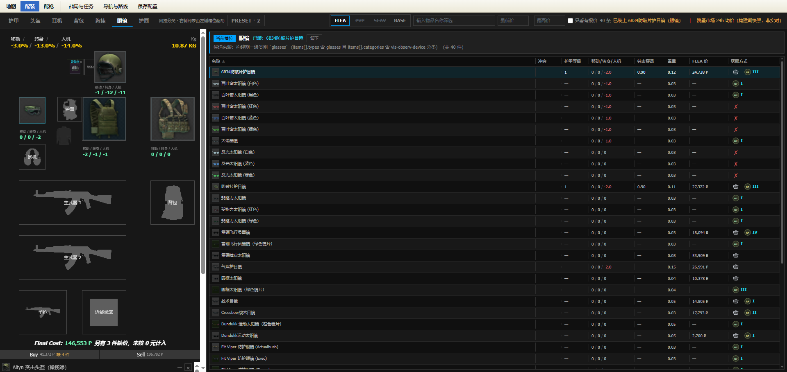
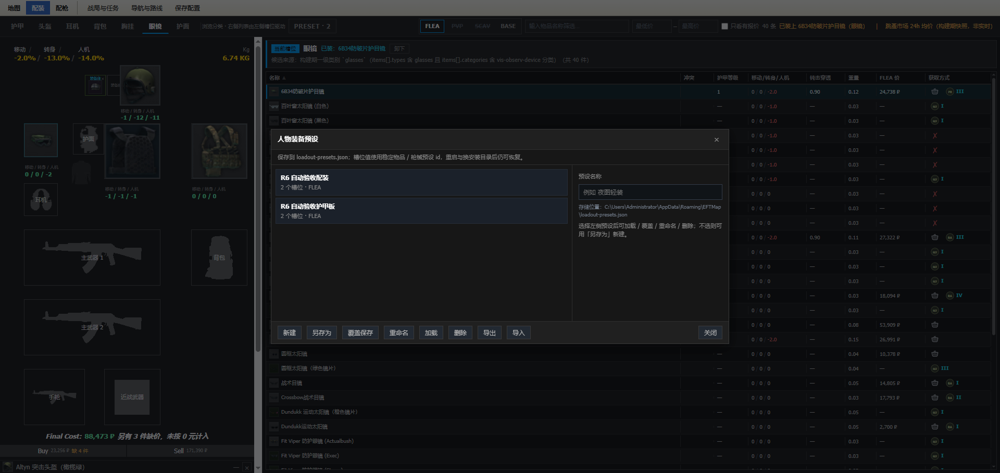
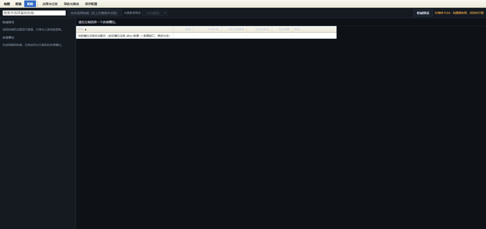
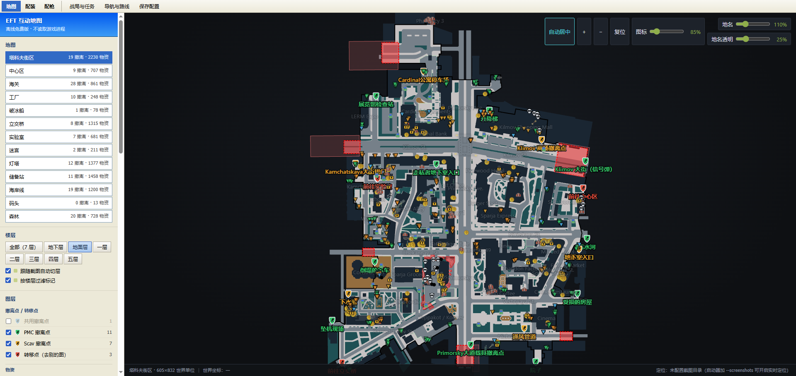
10. 尚未解决的差距及原因（2026-10-21 第三轮后）
上一版第 10 节把「行高 28 / 字号 10」「表头 24」「图标 18」写成主动取舍，本轮已全部推翻并修复： 表头 32px、行高 40px、正文 12px、表头 11px、图标 30px，均为实测值。以下只保留本轮仍未消除、或无法从素材核实的差异。
| 差距 | 实测 / 原因 | 处理 |
|---|---|---|
| 表头下 14px 分组带（「Armor Class 6」）未实现 | 参考图 y≈32–45 有 #565656 通栏灰带，本地没有；其文案与数据语义（分组名？表头副标题？）无法从素材核实，也没有对应字段 | 不凭猜测实现，记录为未解决 |
| 名称列比参考窄 5px | 参考 Icon 40 + Name 305 + 减益 125 = 470px；本地 300 + 冲突 64 + 104 = 468px，插板列起点误差 ±1px | 本地多一个业务列「冲突」，不为凑数隐藏它 |
| 表头对齐 | 参考图表头居中，本地按第七轮第 5.6 条硬性要求全部左对齐 | 两条要求互斥，保留用户指定的左对齐 |
| 插板数据条紫徽标字母 | 参考图恒为「H」，语义无法核实；本地显示材质首字母（T / C），徽标 9×10 vs 参考 9×9，字母亮度参考约 150–176、本地纯白 | 不编造「H」的含义，未为此调整字号 |
| 字体族 / 抗锯齿 | 字号已一致，但参考站为窄体（12 字符约 42px），本机系统字体更宽；本地为 Chromium 次像素抗锯齿（文字有彩边），参考图为灰度抗锯齿 | 离线约束下不引入外部字体，抗锯齿由浏览器控制 |
| 数据行斑马纹 | 参考图各行一律 #121212（实测 18,18,18），本地偶数行 #181818 | 斑马纹属全类别公共样式，超出「仅改护甲表」范围，待确认后再动 |
| 正文亮度峰值 220 vs 224–242 | 再提亮会与表头 / 次要文字失去层级 | 保留一档差 |
| 选中 / 悬停 / 冲突行样式 | 参考素材没有这三态截图 | 选中态已满足「只有细蓝边、无大面积高亮」，其余仍为推断值 |
| 左栏 504px vs 实测 ≈500px | 504u 是既有设计基准，整体截图左栏边界受缩放影响，误差约 ±4px | 不为 0.8% 改动整栏 |
| 局部减益在原站无对应元素 | 需求来自用户明确要求，参考图只有全身统计 | 按需求实现，不与原站比对 |
11. 交付物
- 视觉参数表：r7-visual-diff/visual-params.md
- 本轮校准截图与原始测量：
r7-visual-diff/cal2/（r9-table.png、r9-cmp-row.png、r9-cmp-head.png、r9-cmp-plates-6x.png、r9-scroll-right.png、r8-cmp-overlay.png、r8-cmp-diff.png、r10-scrollbar-*、r9-measure.json、r10-scrollbar.json、r11-table.png、r11-measure.json） - 截图审计与配对：r7-visual-diff/audit-inventory.md
- 参考图：
r7-visual-diff/ref/（10 张） - 本地实测截图：
r7-visual-diff/after/（25 张，含 6 张离线） - 同尺寸对照图：
r7-visual-diff/compare/（9 张） - 50% 叠加图：
r7-visual-diff/diff/（2 张） - 测试记录：
pytest tests -q→ 673 passed / 1 skipped - 离线验证：
r7-visual-diff/offline-audit.json、offline-preset-gun-map.json、offline-plate-debuff.json（运行期外部请求被拦截的实测记录）